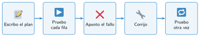

Probar y corregir una app
🤔 Pienso5 min
Qué hago aquí: Piensa un momento y contesta con lo que ya sabes. No pasa nada si no lo sabes: es para empezar.
¿Alguna vez una app o un juego te ha fallado? Cuenta qué pasó.
📖 Leo y aprendo15 min
Qué hago aquí: Lee despacio, mira los dibujos y los ejemplos, y quédate con la idea clave del final.
Una app sin probar casi siempre tiene errores. Hay dos tipos:
- Error de ejecución: la app se para o sale un aviso rojo. Por ejemplo, un identificador mal escrito.
- Error de lógica: la app funciona, pero hace otra cosa. Por ejemplo, suma 2 en lugar de 1.
Para encontrarlos se hace un plan de pruebas: una tabla con qué pruebas, qué debería pasar y qué pasa.

En App Lab, la consola (debajo del código) muestra los avisos de error y la línea donde están.
✏️ Hago25 min
Qué hago aquí: Haz las actividades en orden. Empieza siempre por las básicas.
¿Error de ejecución o de lógica?
- El juego suma 10 puntos en lugar de 1.
- Al pulsar el botón sale un aviso rojo y no pasa nada.
Escribe tres pruebas para tu app: una normal y dos raras.
Cambia de ordenador con un compañero. Prueba su app con su plan y marca qué pruebas salen bien.
Corrige un error que te haya encontrado tu compañero. Explica qué estaba mal y qué has cambiado.
✏️ Puedes responder escribiendo, con un dibujo o un esquema, o contándolo en voz alta.
🚀 Amplío (si quieres saber más)
Qué hago aquí: ¿Has terminado? Lee la curiosidad o elige el reto. Es voluntario.
Mejora la app que saluda: si el cuadro está vacío, que diga «Escribe tu nombre». Pista: if con nombre == "".
✅ Compruebo5 min
Qué hago aquí: Contesta sin mirar la ficha y marca cómo lo llevas.